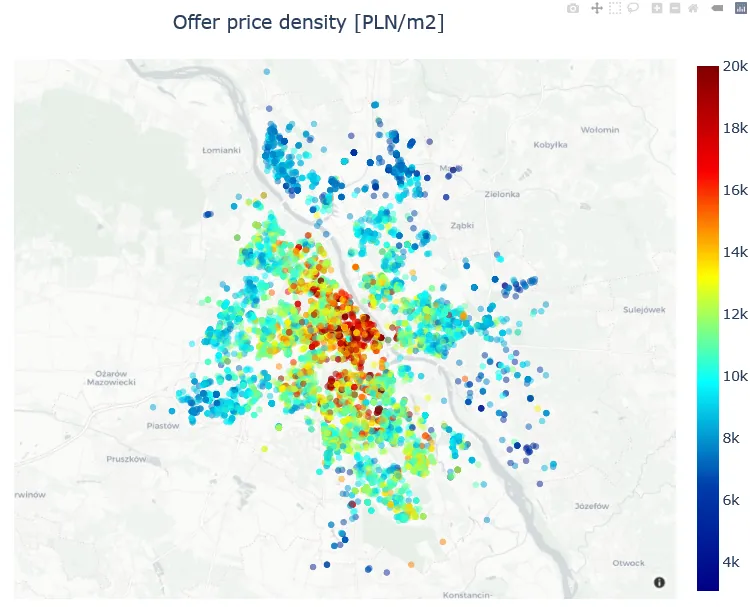
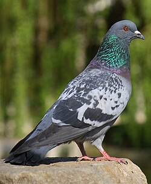
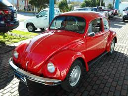
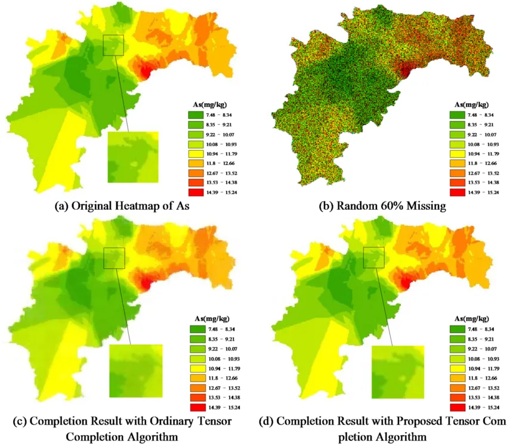
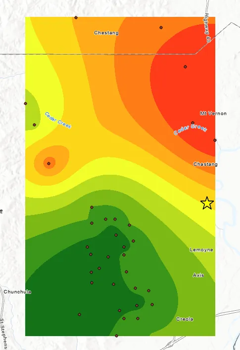
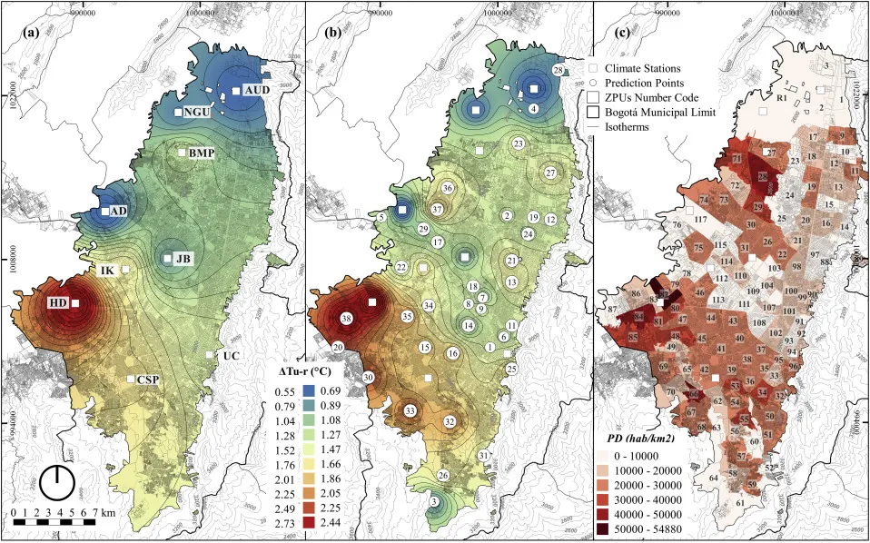
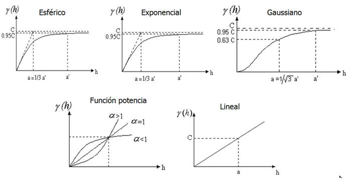
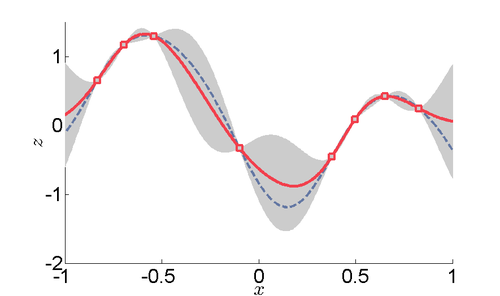

La geoestadística es una rama de la estadística que se enfoca en el análisis de fenómenos que varían en el espacio geográfico. A diferencia de la estadística tradicional, la geoestadística considera no solo los valores de una variable, sino también la correlación espacial entre ellos, es decir, cómo cambian en función de su ubicación. Esto la hace especialmente útil en campos donde la distribución espacial de los datos es crucial, como la geología, la minería, la agricultura, el medio ambiente, la hidrología y la salud pública.
¡Mira con detenimiento la imagen que mostramos arriba!. Cualquier propiedad/dato puede ser graficado en un mapa espacial. No solo ofrecemos la generación de mapas de contorno y mapas de "calor" para propiedades fisicoquímicas (contaminantes, compuestos de interes para minería, concentración de nutrientes, etc.) podemos ayudarte a crear mapas con observaciones tan únicas y originales como:
•Cantidad de palomas vistas


Los mapas de calor (o heatmaps) son representaciones gráficas que permiten visualizar la intensidad o densidad de una variable en un área determinada mediante el uso de colores. Generalmente, los colores más cálidos (como el rojo o el naranja) indican valores altos o concentraciones elevadas, mientras que los colores fríos (como el azul o el verde) representan valores bajos.



El kriging es una técnica de interpolación geoestadística utilizada para estimar valores de una variable en ubicaciones no muestreadas, basándose en los valores conocidos en puntos cercanos y en la correlación espacial entre ellos. A diferencia de métodos simples como la media ponderada o la interpolación lineal, el kriging considera no solo la distancia entre los puntos, sino también la estructura de variabilidad espacial, que se describe mediante un modelo matemático llamado semivariograma.
Modelos de Semivariogramas

